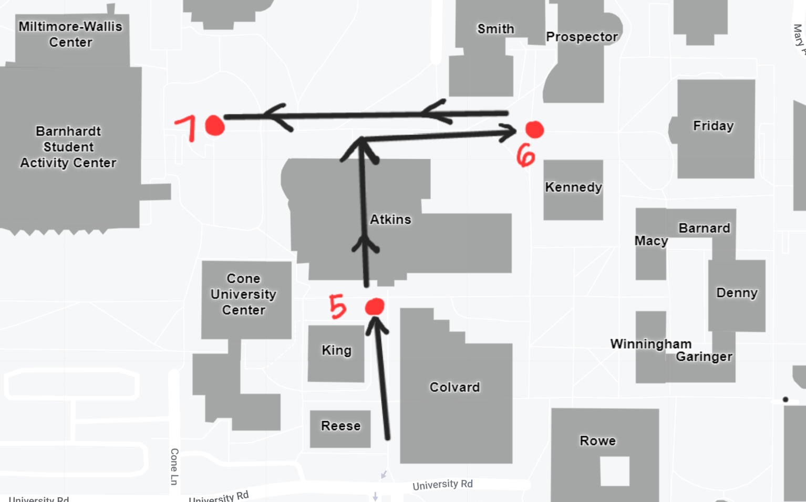

Below are maps with stop indicated for Guides' reference:
- 
*Citation:
Interactive Campus Map | Facilities Management | UNC Charlotte. (n.d.). https://facilities.charlotte.edu/our-service
*Citation:
Interactive Campus Map | Facilities Management | UNC Charlotte. (n.d.). https://facilities.charlotte.edu/our-service